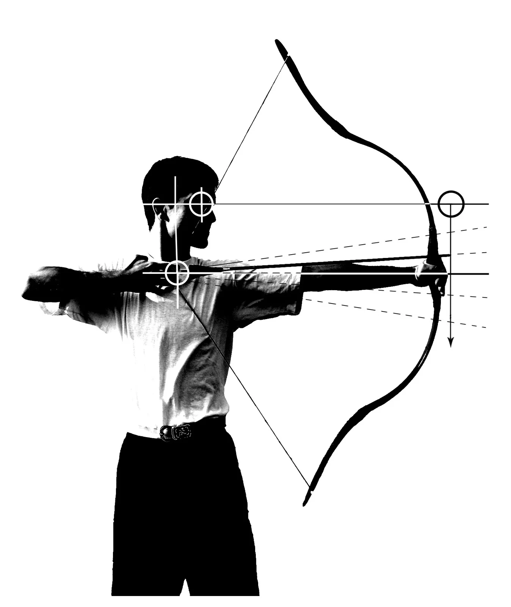
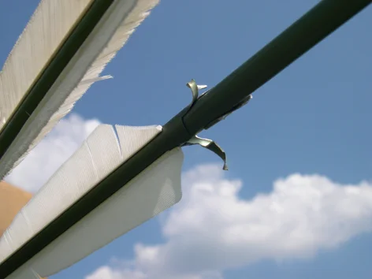

***
*** ... . A HAGYOMÁNYOS CÉLZÁSTECHNIKA
**********
A fegyverekhez való első igazi közeledést számomra a lőfegyverek jelentették. Állócél és futóvadlövészet. Sok év elmélyült gyakorlás és az ennek köszönhető kiemelkedő sportági eredmények hasznos tapasztalatokkal gazdagítottak az íjjal történő célba lövés elsajátításához. Ezzel a háttérrel, amikor végleg fegyvert váltottam, pontosan felismerhettem a különbséget a lövészet és az íjászat között. Tudatára ébredhettem annak, hogy milyen a lövészet íjjal, és mi is az íjászat? A különbséget a nyilvessző célba juttatásának alapvető cselekményében, a célzás módszerében látom. Minden egyéb összetevő ebből következik. Az íjászat, mint maga a fegyver, hagyomány. A múlt egy élő darabja a jelenben. A célzás hagyományos technikájának megfigyelését is érdemes a múltban kezdeni.
Ehhez nincs szükségünk időutazásra, vagy a lövés teljes folyamatát mozdulatonként bemutató ábrákra, de még részletes leírásra sem, és érdekes módon ilyen lehetőségek nem is állnak a rendelkezésünkre. Íjjal célbalövő harcost vagy vadászt megörökítő alkotások viszont töménytelen mennyiségben. Az aquileiai magyar lovas ábrázolásának számtalan párhuzama, melyek mindegyikén ugyanazt figyelhetjük meg, és csodálatos módon legtöbbször éppen a lényeget. A lövést közvetlenül megelőző célzás pillanatát.

... Az íjhoz nem illő célzástechnikát alkalmazva csökken a húzáshossz. A rövid húzás miatt az íj nem adja le a tőle elvárható teljesítményt. Ennek következtében a nyilvessző röppályája meredekebbé válik, és jelentősen lerövidül. A nagyobb távolságról (30 m felett) leadott lövések találati pontossága erősen romlik. A célzás egyre bizonytalanabbá válik. Mivel a távolság növelésekor az íjász az íjat tartó kezének - vagyis a nyilvessző hegyének - emelésével kompenzál, sokkal hamarabb (a célhoz sokkal közelebb) éri el azt a pontot, ahol az íjat tartó kéz eltakarja szeme elől a célt. ...
... A lövészet módszere tisztán a szemkontrollra épül. Ezt egészíti ki némi mozgáskoordinációs reflexgyakorlat és légzéstechnika. A szemkontroll alkalmazásához egyértelmű és jól látható fix pontokra van szükség. Egy nyílt irányzékkal felszerelt lőfegyver esetében ezek a pontok a nézőke vízszintes elvágó éle, a célzótüske és a célpont (diopternél: a lövésznek a dioptertárcsa teljes látómezején áttekintő szeme, a célzótüske vagy gyűrű és a cél, távcsőnél: a lövész szeme, a célkereszt, -szál vagy pont, és a cél). Abban az esetben, ha ezeket a fix pontokat a lövész egy vonalba állítja, lövése célba talál. Feltéve, hogy a célzóberendezés pontosan van beállítva, és éppen olyan távolságban helyezkedik el a céltárgytól, amilyen távolságról azt beállították. ...
***************
... Egy lovas íjásztechnikának azonban éppen lóháton, mozgás közben kell jól használhatónak, gyorsnak és eredményesnek lennie. Abban, hogy mindez megvalósulhasson, még a nyil futtatásának iránya is nagy szerepet játszik.
A lovas íjász, lovának lábain változtatja helyzetét. Ahhoz, hogy fegyverét minél nagyobb szögben legyen képes használni, csípőjével és vállával kell a lovához képest elmozdulást produkálnia. A hagyományos hun-magyar, valamint az ezekkel közel azonos típusú egyéb íjakkal belőhető szögtartomány 180, esetleg 210 fokig is terjedhet. Ez azt jelenti, hogy az íjász képes célozni lovának feje és fara fölött tartott nyilvesszővel is. ...
